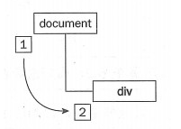

关于web的事件流与event对象早就想总结一篇文章了，国庆期间把书上的事件流与event对象给系统看完了。特此发文总结记录一下知识要点。
【事件流与event对象的重要性科普】
也许你看到这篇文章也许会对，事件流与event对象什么的，重要吗？大致会搬搬代码就行了嘛。
唉，小火子（小菇凉），如果你这么想就错了。web事件流与event对象的知识在前端开发中是核心部分，如果只是会搬搬网上代码会对你的学习和提升造成致命一击。
举个例子来说明：
假设我们来完成一个非常简单的DOM动画。
1.点击click me！可以切换显示或隐藏蓝色方块。
2.点击空白地方，隐藏蓝色方块。
就是这么简单的一个DOM动画，里面隐藏着巨大的知识。首先我们先写出一个click me按钮以及一个蓝色方块：
为了完成刚才上述两个功能，我们要给按钮注册一个click事件，让蓝色方块可以隐藏与显示切换。然后给空白部分，这里其实就是body标签注册click事件，隐藏蓝色方块：
$(document).ready(function(){
$("#test1").click(function(){
$(".inner").fadeToggle();
});
$("body").click(function(){
$(".inner").fadeOut();
});
});
怎么样？写完了。两个简单的DOM动画操作搞定了。
但是，请务必亲自来浏览器里测试一下，你会发现。当点击click me按钮的时候，蓝色方块显示了一下又消失了！
这是怎么回事？我们再来两个注册事件中添加console.log打印代码日志看看：
$(document).ready(function(){
$("#test1").click(function(){
$(".inner").fadeToggle();
console.log("test1 on!");//测试用
});
$("body").click(function(){
$(".inner").fadeOut();
console.log("body on!");//测试用
});
});
好了，我们再试试，当我们刷新页面再点击按钮的时候，观察下控制台：
哎哟，我去！怎么连body的click事件都触发了？我不是明明点击了按钮的吗？
小火子（小姑凉），如果你也曾经遇到过像我这样的情况，并至今没有摸透门道，那这篇文章对你的帮助就会非常大，嘿嘿嘿。
【介绍事件流】
为了解决上面出现的小bug，我们要开始主要的内容：事件流。
什么是事件流？事件流指的是JavaScript从页面上接收事件的顺序。至于你问事件是什么？这个需要你自己去查找咯，这里默认你理解事件的定义。（可以看JavaScript高级程序设计第三版第13章）
那为什么会有事件流这玩样儿呢？
由于web页面的结构特性，DOM结构是树状节点结构，由一个根节点嵌套子节点，父节点包含子节点的关系。所以当你选择某一个子节点时，其实计算机是无法判断你选择的是这个子节点还是它的父节点。举个小例子，比如你画了两个同心圆，大的套在小的外面，当你手指在圆心时，无法确定你指的是大的圆还是小的圆。（这里需要用计算机的逻辑思考下）
因为如此，所以浏览器开发团队就把事件的接收做成了流式的接收方法。（计算机：管你指了谁，我一个一个全部接收一遍）这才有了事件流的诞生。
【事件流的三个阶段】
既然了解了为什么会有事件流这东西，我们来看下事件流具体是什么样的过程。
1.事件冒泡阶段：
事件的冒泡阶段其实是从你选择的目标结构的最小层级元素开始触发一次在该元素上的事件，然后冒泡至它的父元素进行触发，然后再是父元素的父元素，直到根节点。不同的是IE5.5以及较早版本的浏览器冒泡过程到document截止，而高级版本的浏览器冒泡过程到window截止。另外，所有现代浏览器都支持事件冒泡阶段。
2. 处于目标阶段：
当你点击某个元素时，计算机会查询你所点击的DOM结构中可能最深层级的元素，而这个元素在这次事件流中被成为目标元素。在上面例子中如果你点击按钮，那按钮所在的button元素就是目标元素。在目标阶段，会触发一次目标元素的注册事件，目标元素在事件冒泡与事件捕获阶段都会产生，所以在下文都会用目标元素表示。
3.事件捕获阶段：
事件捕获阶段与事件冒泡阶段正好相反，当你点击某个目标元素时，浏览器会从目标元素的根节点开始触发事件，然后传入它的下一个子节点中，直至到目标元素为止。由于事件捕获阶段存在兼容性问题，一些早期版本的浏览器不兼容，所以我们尽量讲事件注册在冒泡阶段，有特殊需求再使用捕获阶段。
那这三个阶段是顺序是怎么样的呢？
这是一张事件流的流程图，当一个事件被触发时，首先会进行事件捕获，从根节点开始出发事件，然后到达目标元素后进入处于目标阶段，然后再进行事件冒泡阶段。但是这个有个坑爹的地方是，在整个过程中处于目标阶段会触发两次。由于冒泡阶段与捕获阶段是由两个不同的开发团队开发的，所以当初虽然规定处于目标阶段属于冒泡阶段过程，捕获阶段不涉及，但是很多目前的高级浏览器中都是在捕获阶段触发处于目标阶段。这导致了一个事件流会触发两次目标阶段。（也就是图中的5到6）
因此正确的顺序应该是：事件捕获 - 目标阶段 - 目标阶段 - 冒泡阶段
这里另外提一句，事件流是针对指定的事件流式接收，也就是说，在同一个DOM结构中，click事件和mouseover事件（或任何其他事件）的事件流是互不相关的。
【在捕获和冒泡阶段注册事件】
这里对于事件的注册不多累述，但需要注意的是如果通过onclick这样的DOM0级事件进行注册事件，是默认注册在冒泡阶段的，而像addEventListener()这样的2级事件方法可以通过传入true或false来选择注册在捕获阶段还是冒泡阶段。另外，jQuery的事件注册是默认注册在冒泡事件上，是无法通过jQuery来给捕获阶段注册的。
【我们来解决刚才的问题吧！】
知道了整个事件流过程，刚才的bug就很好解释了，为什么当我点击按钮的时候，body元素上的click事件也被触发了呢？因为我在body和button上都注册的click事件，当我点击button的时候，浏览器首先触发button的click事件，然后冒泡到body上触发了body的click事件，所以才有了那样的bug。
那如何解决我点击button时，只触发button的click事件呢？
我们需要借助事件处理过程中event对象（事件对象），当触发某个事件时，在当前这个元素的作用域下会产生一个event对象，我们可以通过在事件处理程序中传入一个参数来表示这个是event对象，然后在函数中调用它：
$(document).ready(function(){
$("#test1").click(function(e){
$(".inner").fadeToggle();
e.stopPropagation();
});
}
注意了，这里的参数e就代表了event对象，但是它不一定要叫e，你可以叫event，avent，avenda都可以。
细心的你可能已经看到了解决只出发button的click事件的办法了。就是通过调用事件对象的stopPropagation方法来阻止事件往上一级节点传播。阻止事件传播的方法有很多，这里不多说。想要学习这方面知识的同学，给你提供电梯：取消事件冒泡的三种方法
通过event对象我们不仅可以控制事件流的传播，还可以做很多其他的事情。另外，event对象仅在某个元素的事件被触发时生效，当事件结束后，event对象会被销毁掉。我们贴一张关于event对象的基础成员：
好了，回到刚才的话题，现在如果你把程序改成这样：
$(document).ready(function(){
$("#test1").click(function(e){
$(".inner").fadeToggle();
e.stopPropagation();
});
$("body").click(function(){
$(".inner").fadeOut();
});
});
再测试一下。
嗯，发现点击button按钮时就不会再触发body的click事件了。等等，但是你再点点看蓝色方块，是不是点击之后蓝色方块居然消失了= =。这可不是我们想要的，我们只需要在空白地方点击才隐藏蓝色方块。
那为什么会这样呢？
原来当点击蓝色方块时，同样它触发了冒泡阶段，蓝色方块的父节点有body元素，所以最后当click事件传播当body元素时，蓝色方块就被隐藏掉了。
找到问题后，解决就简单了，同样的原理，我们在蓝色方块上阻止click事件的向上传播，这样就可以完美实现刚才的DOM动画需求啦。
$(document).ready(function(){
$("#test1").click(function(e){
//注册test1按钮的click事件
$(".inner").fadeToggle();
//这里之后禁止事件传播
e.stopPropagation();
});
$("body").click(function(){
//注册body的click事件
$(".inner").fadeOut();
});
$(".inner").click(function(e){
//注册蓝色方块的click事件并禁止click事件传播
e.stopPropagation();
});
});
好了，现在你再测试一下，是不是就很完美了。
所以看似简单的一个DOM动画需求，其实内涵玄机。读到这里也许你已经有预感到，DOM层级结构的设计对事件流控制以及前端动画表现有非常重要的意义。所以如果你不掌握事件流的知识，是无法写出高效的DOM层级结构的哦！
【总结】
1. 事件流是为了解决浏览器无法判断你具体指向哪个节点元素而设计的解决方案
2. 事件流有三个阶段：冒泡阶段、捕获阶段、目标阶段
3. 事件流触发三个阶段的顺序是：捕获阶段 - 目标阶段 - 目标阶段 - 冒泡阶段
4. 通过事件处理程序中的event对象，可以控制事件流的传播
5. 掌握理解事件流的原理，有助于你设计良好的DOM层级结构
感谢你的耐心阅读！
2016年10月2日